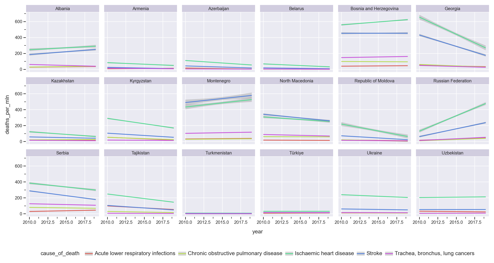

import polars as pl
import polars.selectors as cs
from plotnine import *
from great_tables import GTPivots and joins
VIDEO 1 BFFP data
Hello and welcome back to Data Literacy with Python!
We’re continuing our exciting journey into data wrangling — a cornerstone of analysis and storytelling. If you’ve been following along, congratulations! You’ve covered a lot of ground and gained some serious data skills.
Let’s quickly recap:
- We learned how to subset data, selecting specific columns using
.select(),.drop(), and the powerful suite ofpolars.selectors. We used.head(),.tail()and.filter()to pick out key observations. - We mastered creating new columns with expressions inside
.with_columns(). - Finally, we explored summarizing data using
.group_by()and.agg(), generating meaningful insights from our datasets.
These are all essential skills, and you’re doing great!
But now, it’s time to level up. Today, we’re tackling data reshaping and joins, two powerful techniques for reorganizing and enriching datasets. I also promised you some nice-looking tables, and I intend to deliver! We’ll be using the amazing great_tables library for our table designs. Let’s load up the libraries and dive right in.
< PAUSE >
Today’s dataset comes from the Break from Plastics environmental campaign — a sample with a powerful story. Here’s a quck overview:
< PAUSE >
Tip
In 2020, thanks to our members and allies, Break Free From Plastic engaged 14,734 volunteers in 55 countries to conduct 575 brand audits. These volunteers collected 346,494 pieces of plastic waste, 63% of which was marked with a clear consumer brand. Despite the challenges of organizing during a global pandemic, our volunteers safely coordinated more brand audit events in more countries this year than in the previous two years. As a special activity during the pandemic, we also worked with over 300 waste pickers to highlight their roles as essential workers. Participants catalogued over 5,000 brands in this year’s global audit. Our analysis reveals the following as the 2020 Top 10 Global Polluters: The Coca-Cola Company; PepsiCo; Nestlé; Unilever; Mondelez International; Mars, Inc.; Procter & Gamble; Philip Morris International; Colgate-Palmolive; and Perfetti Van Melle.
Have a look at the code that brings this data into our workspace:
< PAUSE >
plastics_df = pl.read_csv('https://bit.ly/data24-bffplastics')
plastics_docs = pl.DataFrame({
'Variable': ['region', 'country_code' , 'country', 'year', 'parent_company', 'empty', 'hdpe', 'ldpe', 'o', 'pet', 'pp', 'ps', 'pvc', 'grand_total', 'num_events', 'volunteers'],
'Class': ['character','character','character', 'double', 'character', 'double', 'double', 'double', 'double', 'double', 'double', 'double', 'double', 'double', 'double', 'double'],
'Description': ['Region', 'Alpha 3 ISO 3166 code','Country of cleanup', 'Year (2019 or 2020)', 'Source of plastic (company name)', 'Category left empty count', 'High density polyethylene count (Plastic milk containers, plastic bags, bottle caps, trash cans, oil cans, plastic lumber, toolboxes, supplement containers)', 'Low density polyethylene count (Plastic bags, Ziploc bags, buckets, squeeze bottles, plastic tubes, chopping boards)', 'Category marked other count', 'Polyester plastic count (Polyester fibers, soft drink bottles, food containers (also see plastic bottles)', 'Polypropylene count (Flower pots, bumpers, car interior trim, industrial fibers, carry-out beverage cups, microwavable food containers, DVD keep cases)', 'Polystyrene count (Toys, video cassettes, ashtrays, trunks, beverage/food coolers, beer cups, wine and champagne cups, carry-out food containers, Styrofoam)', 'PVC plastic count (Window frames, bottles for chemicals, flooring, plumbing pipes)', 'Grand total count (all types of plastic)', 'Number of counting events', 'Number of volunteers']
})In your notebook you can see the code for importing the data, as well as a DataFrame containing a data dictionary — a detailed description of the variables in this dataset.
So far, we’ve always imported data from CSV files or pre-built datasets. But now, it’s time to talk about creating data frames by hand. This is super handy when working with small examples, prototypes, or mock data. To do that, we need to talk about two foundational Python data structures: dictionaries and lists.
Think of a dictionary as a way to describe an object. It’s a collection of “key-value” pairs—like writing down standard characteristics of something along with their values. Dictionaries are specified with curly brackets {}. Let’s say I want to describe my bike:
< PAUSE >
Bicycle = {
'Type': 'Hybrid',
'Size': 28,
'Make': 'Merida',
'Color': 'Grey',
'Price': 250
}Here, each characteristic—like Type or Size—has one value. Easy, right? But what if I also wanted to describe the bikes of my twins? I’d need three records, not one.
This is where lists come in. A list is a collection of items—typically of the same type—and it’s denoted with square brackets []. Let’s use lists to describe all the bikes in my garage:
< PAUSE >
Bikes = {
'Type': ['Hybrid', 'MTX', 'BMX'],
'Size': [28, 24, 26],
'Make': ['Merida', 'Giant', 'Specialized'],
'Color': ['Grey', 'White', 'Orange'],
'Price': [250, 180, 220]
}Now, we have a dictionary of lists, representing three bikes. To turn this into a Polars DataFrame, all we need to do is pass it to the pl.DataFrame() function:
< PAUSE >
bikes_df = pl.DataFrame(Bikes)And just like that, we’ve created a data frame by hand! This is a simple yet powerful way to structure and manipulate small datasets.
Our plastics_docs specifies three characteristics: the variable names (Variable), their data types (Class), and their descriptions (Description).
This table essentially acts as documentation for the plastics_df. But let’s face it — raw data frames, while functional, don’t always look polished or presentation-ready. That’s where the Great Tables package comes in.
Great Tables is like a graphic design toolkit for your tables! It introduces a “grammar of tables,” similar to how plotnine provides a “grammar of graphics.” This makes it super easy to transform plain data frames into beautifully styled tables with minimal effort.
The core function in Great Tables is GT(), and it works similarly to how we use ggplot for creating plots. Let’s take a sneak peek at its capabilities by styling our plastics_docs data frame. Here’s how we do it:
< PAUSE >
(
GT(plastics_docs)
.opt_stylize(style=3, color='cyan')
)| Variable | Class | Description |
|---|---|---|
| region | character | Region |
| country_code | character | Alpha 3 ISO 3166 code |
| country | character | Country of cleanup |
| year | double | Year (2019 or 2020) |
| parent_company | character | Source of plastic (company name) |
| empty | double | Category left empty count |
| hdpe | double | High density polyethylene count (Plastic milk containers, plastic bags, bottle caps, trash cans, oil cans, plastic lumber, toolboxes, supplement containers) |
| ldpe | double | Low density polyethylene count (Plastic bags, Ziploc bags, buckets, squeeze bottles, plastic tubes, chopping boards) |
| o | double | Category marked other count |
| pet | double | Polyester plastic count (Polyester fibers, soft drink bottles, food containers (also see plastic bottles) |
| pp | double | Polypropylene count (Flower pots, bumpers, car interior trim, industrial fibers, carry-out beverage cups, microwavable food containers, DVD keep cases) |
| ps | double | Polystyrene count (Toys, video cassettes, ashtrays, trunks, beverage/food coolers, beer cups, wine and champagne cups, carry-out food containers, Styrofoam) |
| pvc | double | PVC plastic count (Window frames, bottles for chemicals, flooring, plumbing pipes) |
| grand_total | double | Grand total count (all types of plastic) |
| num_events | double | Number of counting events |
| volunteers | double | Number of volunteers |
Voilà! .opt_stylize() method has some pre-built styles, which we used to convert a boring data frame into a polished and professional-looking table, ready to be shared or included in reports. Don’t worry about memorizing the details just yet — we’ll explore GT() more thoroughly in the upcoming sections.
Before we move on, let’s take a quick look at the data itself. Here’s a snippet of the first five rows of the plastics_df:
< PAUSE >
(
plastics_df
.head(5)
)
shape: (5, 16)
| region | country_code | country | year | parent_company | empty | hdpe | ldpe | o | pet | pp | ps | pvc | grand_total | num_events | volunteers |
|---|---|---|---|---|---|---|---|---|---|---|---|---|---|---|---|
| str | str | str | i64 | str | i64 | i64 | i64 | i64 | i64 | i64 | i64 | i64 | i64 | i64 | i64 |
| "Americas" | "ARG" | "Argentina" | 2019 | "Grand Total" | 0 | 215 | 55 | 607 | 1376 | 281 | 116 | 18 | 2668 | 4 | 243 |
| "Americas" | "ARG" | "Argentina" | 2019 | "Unbranded" | 0 | 155 | 50 | 532 | 848 | 122 | 114 | 17 | 1838 | 4 | 243 |
| "Americas" | "ARG" | "Argentina" | 2019 | "The Coca-Cola Company" | 0 | 0 | 0 | 0 | 222 | 35 | 0 | 0 | 257 | 4 | 243 |
| "Americas" | "ARG" | "Argentina" | 2019 | "Secco" | 0 | 0 | 0 | 0 | 39 | 4 | 0 | 0 | 43 | 4 | 243 |
| "Americas" | "ARG" | "Argentina" | 2019 | "Doble Cola" | 0 | 0 | 0 | 0 | 38 | 0 | 0 | 0 | 38 | 4 | 243 |
As you can see, the first few variables look familiar. They describe general metadata, like the region, country, and year. But let’s focus on the variables starting from empty and going down to pvc. These columns count the number of plastic pieces of different types collected during the cleanup.
The grand_total column sums up all these individual plastic counts. Finally, the last two columns—num_events and volunteers—capture operational details:
- How many trash counting events took place in each country during a given year?
- How many volunteers participated in these campaigns?
This dataset offers a wealth of insights into plastic pollution patterns across the globe. By organizing, reshaping, and visualizing this data, we’ll uncover powerful stories about the environmental challenges we face—and the steps we can take to address them.
Let’s take a closer look at the data. Check out this very first row for Argentina. Notice the parent_company column contains the value: “Grand Total.” This suggests that this first row contains the totals for all Argentinian records in 2019.
Let’s look at the next year:
< PAUSE >
(plastics_df
.filter(pl.col("year")==2020,
pl.col("country")=="Argentina")
)
shape: (226, 16)
| region | country_code | country | year | parent_company | empty | hdpe | ldpe | o | pet | pp | ps | pvc | grand_total | num_events | volunteers |
|---|---|---|---|---|---|---|---|---|---|---|---|---|---|---|---|
| str | str | str | i64 | str | i64 | i64 | i64 | i64 | i64 | i64 | i64 | i64 | i64 | i64 | i64 |
| "Americas" | "ARG" | "Argentina" | 2020 | null | 0 | 12 | 9 | 70 | 9 | 7 | 2 | 0 | 109 | 24 | 9 |
| "Americas" | "ARG" | "Argentina" | 2020 | "Aceitera Martinez S.A" | 0 | 0 | 0 | 0 | 1 | 0 | 0 | 0 | 1 | 24 | 9 |
| "Americas" | "ARG" | "Argentina" | 2020 | "AGD" | 0 | 0 | 0 | 3 | 1 | 0 | 0 | 0 | 4 | 24 | 9 |
| "Americas" | "ARG" | "Argentina" | 2020 | "Alfredo Willliner S.A" | 0 | 0 | 0 | 0 | 0 | 0 | 2 | 0 | 2 | 24 | 9 |
| "Americas" | "ARG" | "Argentina" | 2020 | "Alicorp Argentina" | 0 | 0 | 0 | 0 | 0 | 1 | 0 | 0 | 1 | 24 | 9 |
| … | … | … | … | … | … | … | … | … | … | … | … | … | … | … | … |
| "Americas" | "ARG" | "Argentina" | 2020 | "Vidagro S.A." | 0 | 1 | 0 | 0 | 0 | 0 | 0 | 0 | 1 | 24 | 9 |
| "Americas" | "ARG" | "Argentina" | 2020 | "Williner" | 0 | 0 | 0 | 0 | 0 | 0 | 2 | 0 | 2 | 24 | 9 |
| "Americas" | "ARG" | "Argentina" | 2020 | "Wrigley Company" | 0 | 0 | 0 | 0 | 0 | 1 | 0 | 0 | 1 | 24 | 9 |
| "Americas" | "ARG" | "Argentina" | 2020 | "Yin Yang" | 0 | 0 | 0 | 0 | 1 | 0 | 0 | 0 | 1 | 24 | 9 |
| "Americas" | "ARG" | "Argentina" | 2020 | "Zaplast" | 0 | 0 | 0 | 0 | 0 | 0 | 1 | 0 | 1 | 24 | 9 |
Here’s something curious: for the year 2020, the rows with country totals aren’t marked with “Grand Total.” Instead, the parent_company field is left blank, or in technical terms, it’s marked as missing - Null. Hmm! What do we do with those?
Null values aren’t just limited to parent_company. Let’s take a look at records collected in 2019 from unidentified locations.
< PAUSE >
(plastics_df
.filter(pl.col("country").is_null())
)
shape: (1_346, 16)
| region | country_code | country | year | parent_company | empty | hdpe | ldpe | o | pet | pp | ps | pvc | grand_total | num_events | volunteers |
|---|---|---|---|---|---|---|---|---|---|---|---|---|---|---|---|
| str | str | str | i64 | str | i64 | i64 | i64 | i64 | i64 | i64 | i64 | i64 | i64 | i64 | i64 |
| null | null | null | 2019 | "Grand Total" | null | 1535 | 6443 | 30181 | 11087 | 5420 | 2101 | 188 | 56955 | 145 | 1416 |
| null | null | null | 2019 | "Unbranded" | null | 631 | 3176 | 17432 | 4265 | 2417 | 1545 | 20 | 29486 | 145 | 1416 |
| null | null | null | 2019 | "The Coca-Cola Company" | null | 130 | 4 | 157 | 1154 | 210 | 1 | 51 | 1707 | 145 | 1416 |
| null | null | null | 2019 | "Philip Morris" | null | 13 | 37 | 1579 | 1 | 0 | 4 | 0 | 1634 | 145 | 1416 |
| null | null | null | 2019 | "Sahakari Jal" | null | 0 | 0 | 0 | 563 | 975 | 0 | 0 | 1538 | 145 | 1416 |
| … | … | … | … | … | … | … | … | … | … | … | … | … | … | … | … |
| null | null | null | 2019 | "Schulte" | null | 0 | 0 | 1 | 0 | 0 | 0 | 0 | 1 | 145 | 1416 |
| null | null | null | 2019 | "Schwartau" | null | 0 | 1 | 0 | 0 | 0 | 0 | 0 | 1 | 145 | 1416 |
| null | null | null | 2019 | "Schöfferhofer" | null | 0 | 0 | 1 | 0 | 0 | 0 | 0 | 1 | 145 | 1416 |
| null | null | null | 2019 | "Scotts Black Mulch" | null | 0 | 1 | 0 | 0 | 0 | 0 | 0 | 1 | 145 | 1416 |
| null | null | null | 2019 | "Cherry Valley marketplace" | null | 0 | 0 | 1 | 0 | 0 | 0 | 0 | 1 | 145 | 1416 |
Before we dive deeper into analyzing top contributors to plastic waste, let’s calculate the totals per country and year ourselves. Why?
Well, the dataset has pre-computed totals marked with “Grand Total” or Null in the parent_company, but the logic seems inconsistent. Recomputing the totals ensures transparency and accuracy in our analysis.
Here’s how we start:
< PAUSE >
(plastics_df
.drop("grand_total")
.filter(pl.col("parent_company")!="Grand Total",
pl.col("parent_company").is_not_null())
)
shape: (13_278, 15)
| region | country_code | country | year | parent_company | empty | hdpe | ldpe | o | pet | pp | ps | pvc | num_events | volunteers |
|---|---|---|---|---|---|---|---|---|---|---|---|---|---|---|
| str | str | str | i64 | str | i64 | i64 | i64 | i64 | i64 | i64 | i64 | i64 | i64 | i64 |
| "Americas" | "ARG" | "Argentina" | 2019 | "Unbranded" | 0 | 155 | 50 | 532 | 848 | 122 | 114 | 17 | 4 | 243 |
| "Americas" | "ARG" | "Argentina" | 2019 | "The Coca-Cola Company" | 0 | 0 | 0 | 0 | 222 | 35 | 0 | 0 | 4 | 243 |
| "Americas" | "ARG" | "Argentina" | 2019 | "Secco" | 0 | 0 | 0 | 0 | 39 | 4 | 0 | 0 | 4 | 243 |
| "Americas" | "ARG" | "Argentina" | 2019 | "Doble Cola" | 0 | 0 | 0 | 0 | 38 | 0 | 0 | 0 | 4 | 243 |
| "Americas" | "ARG" | "Argentina" | 2019 | "Pritty" | 0 | 0 | 0 | 0 | 22 | 7 | 0 | 0 | 4 | 243 |
| … | … | … | … | … | … | … | … | … | … | … | … | … | … | … |
| "Western Pacific" | "VNM" | "Viet Nam" | 2020 | "Vinamilk" | 0 | 0 | 0 | 91 | 1 | 0 | 0 | 0 | 6 | 27 |
| "Western Pacific" | "VNM" | "Viet Nam" | 2020 | "VINH HAO CO." | 0 | 0 | 0 | 0 | 4 | 0 | 0 | 0 | 6 | 27 |
| "Western Pacific" | "VNM" | "Viet Nam" | 2020 | "Vital" | 0 | 0 | 0 | 0 | 4 | 0 | 0 | 0 | 6 | 27 |
| "Western Pacific" | "VNM" | "Viet Nam" | 2020 | "VM Group" | 0 | 2 | 0 | 0 | 0 | 0 | 0 | 0 | 6 | 27 |
| "Western Pacific" | "VNM" | "Viet Nam" | 2020 | "Yakult" | 0 | 0 | 0 | 0 | 0 | 2 | 0 | 0 | 6 | 27 |
Let’s break this down:
drop("grand_total"): Thegrand_totalcolumn is a pre-computed sum of all plastic types, which we can recalculate if needed.- Exclude “Grand Total” rows: We filter out rows where the
parent_companycolumn is populated with the phrase “Grand Total.” - Exclude
Nullvalues inparent_companycolumn: These rows lack a meaningful company label and often represent aggregated data.
By cleaning the data in this way, we ensure that our analysis is based on individual contributions, not pre-summarized totals.
VIDEO 2 Aggregation
Now, let’s talk about the two special columns in our dataset: num_events and volunteers. These capture the number of counting events and the number of volunteers who participated in the cleanup campaigns.
But here’s the catch. These columns don’t vary within groups of rows for the same year and country. Instead, they represent aggregate metrics that make sense at the country-year level, but are less meaningful at the company level.
For now, let’s set aside the rankings of companies responsible for the most plastic waste. Instead, we’ll focus on the campaign itself — the Break from Plastics community engagement on a country level.
It’s time to roll up our sleeves and aggregate the data at the country-year level. First, let’s think about the groups we’re interested in. Our primary group identifiers would be region, country_code, country, and year. These columns define the unique groups for aggregation since each country belongs to one region and has a unique country code.
Now, let’s decide what to aggregate. We are interested in aggregating the eight columns from empty to pvc. These need to be summed for each group. However, columns like num_events and volunteers shouldn’t be summed because their values remain constant within each group. Instead, we’ll take the first non-null value in each group.
With the powerful multi-column expressions in polars, we don’t need to write repetitive code for each plastic type. Using selectors, we can quickly choose and process groups of columns. I encourage you to try it out now.
Challenge
Aggregate the plastic counts at the country-year level, ensuring that the num_events and volunteers columns remain intact. When you’re done, store the result into a new variable called plastics_countries_df.
Take a moment to pause the video and give it a try.
< PAUSE >
plastics_countries_df = (plastics_df
.drop("grand_total")
.filter((pl.col("parent_company")!="Grand Total"),
(pl.col("parent_company").is_not_null()))
.group_by("region", "country_code", "country", "year")
.agg(
cs.numeric().exclude("num_events", "volunteers").sum(),
cs.by_index(-2, -1).drop_nulls().first())
)Fantastic! Now that we have our cleaned and aggregated dataset, let’s talk about total plastic counts.
To calculate the total number of plastic items inspected, you’d typically list all relevant columns and sum them up: total_count=pl.col("empty")+pl.col("hdpe")+pl.col("ldpe")+ and so on. But imagine if you had hundreds of columns instead of eight! This approach would quickly become overwhelming.
Luckily, there’s a clever trick to make this task more manageable: pivoting. By reorganizing the data into a different format, we can simplify calculations and enable more flexible analysis.
In the next section, we’ll dive into pivoting and explore how to reshape plastics_countries_df for deeper insights.
Let’s keep going!
VIDEO 4 Wide and long data
Let’s take a moment to reflect on two common ways of organizing the same data: wide and long formats.
On the left, we see a wide format dataframe. Here, each row represents a single observation, and the variables are spread across multiple columns.
On the right, we have the same data in a long format. In this version:
- The first two columns, known as ID or index variables, are repeated for each observation.
- A new column,
plastic_type, gathers the names of the measured variables. - The final column,
quantity, contains the values corresponding to those variables.
< PAUSE >
“Wide” data
| country | year | empty | hdpe | ldpe | o | pet | pp | ps | pvc |
|---|---|---|---|---|---|---|---|---|---|
| Tunisia | 2020 | 17 | 100 | 515 | 541 | 322 | 294 | 6 | 15 |
“Long” data
| country | year | plastic_type | quantity |
|---|---|---|---|
| Tunisia | 2020 | empty | 17 |
| Tunisia | 2020 | hdpe | 100 |
| Tunisia | 2020 | ldpe | 515 |
| Tunisia | 2020 | o | 541 |
| Tunisia | 2020 | pet | 322 |
| Tunisia | 2020 | pp | 294 |
| Tunisia | 2020 | ps | 6 |
| Tunisia | 2020 | pvc | 15 |
These two formats represent the exact same data, but the way they’re structured can have a big impact on how we work with them.
Tip
- Wide Format:
- Easier for humans to read, especially in spreadsheets.
- Good for summarizing data at a glance.
- Long Format:
- Preferred for computations, visualizations, and many data analysis tools.
- Simplifies aggregations and calculations.
When working with data, being able to switch between these formats is essential. Many analysis tasks, like creating summaries or visualizations, become much easier when the data is in long format.
The process of transforming data from wide to long is called unpivoting or melting. This makes sense because the data seems to “melt” down into fewer columns while increasing the number of rows.
When we unpivot data, we typically end up with three columns:
- ID (or Index): These are the identifying variables that stay constant across the observations.
- Key (or Variable Name): This gathers the names of the measured variables into a single column.
- Value: This records the corresponding values for each of the variables.
In our case the ID variables are region, country_code, country, and year. We will name the key column plastic_type. The column containing values will be called quantity.
Our first task is to unpivot the plastic count columns, transforming plastics_countries_df into a long format. This will simplify how we analyze and summarize the data.
As we’ve seen, the long-format data typically consists of three primary columns:
- ID columns that uniquely identify each group or observation.
- Key column that gathers variable names.
- Value column that stores the corresponding values for each variable.
Let’s begin by checking out the documentation for the .unpivot() method. This function gives us precise control over how to reshape the data.
< SMALL PAUSE >

.unpivot() takes four arguments:
on: Specifies the columns to be unpivoted.index: Indicates which columns to keep as ID columns. You can usepolars.selectorsto specify these.variable_name: Sets the name for the Key column.value_name: Sets the name for the Value column.
Note that the on argument is optional. If you don’t specify it, any column not listed as an index will be unpivoted automatically.
Here’s how we can transform the dataset into a long format. We can select the index columns either by name or by position. We can also, optionally, specify the on argument to make it extra clear which columns should be melted.
< PAUSE >
(plastics_countries_df
.unpivot(index=cs.by_name("region", "country_code", "country", "year", "num_events", "volunteers"),
variable_name="plastic_type", value_name="quantity")
)
# which is the same as
(plastics_countries_df
.unpivot(index=cs.by_index(0, 1, 2, 3, -2, -1),
on=cs.by_index(range(4,12)),
variable_name="plastic_type", value_name="quantity")
)
shape: (848, 8)
| region | country_code | country | year | num_events | volunteers | plastic_type | quantity |
|---|---|---|---|---|---|---|---|
| str | str | str | i64 | i64 | i64 | str | i64 |
| "Western Pacific" | "CHN" | "China" | 2019 | 48 | 1439 | "empty" | 0 |
| "Europe" | "UKR" | "Ukraine" | 2020 | 17 | 238 | "empty" | 0 |
| "Eastern Mediterranean" | "TUN" | "Tunisia" | 2020 | 2 | 49 | "empty" | 17 |
| "Africa" | "BEN" | "Benin" | 2020 | 2 | 458 | "empty" | 0 |
| "Europe" | "DEU" | "Germany" | 2020 | 1 | 24 | "empty" | 10 |
| … | … | … | … | … | … | … | … |
| "Western Pacific" | "JPN" | "Japan" | 2020 | 1 | 3 | "pvc" | 3 |
| "Americas" | "SLV" | "El Salvador" | 2020 | 1 | 10 | "pvc" | 0 |
| "Africa" | "NGA" | "Nigeria" | 2019 | 14 | 1648 | "pvc" | 33 |
| "Americas" | "MEX" | "Mexico" | 2019 | 7 | 48 | "pvc" | 0 |
| "Europe" | "CHE" | "Switzerland" | 2019 | 6 | 327 | "pvc" | 0 |
Both approaches produce the same result:
- The columns
region,country_code,country,year,num_events, andvolunteersare preserved as ID columns. - The plastic types (e.g., empty, hdpe, etc.) become the values in the
plastic_typecolumn. - The corresponding counts are stored in the
quantitycolumn.
Once the data is in long format, it becomes much easier to perform calculations. For instance, let’s group the data by region, country_code, country, year, num_events, and volunteers, and calculate the total quantity of plastic collected:
< PAUSE >
(plastics_countries_df
.unpivot(index=cs.by_name("region", "country_code", "country", "year", "num_events", "volunteers"),
variable_name="plastic_type", value_name="quantity")
.group_by("region", "country_code", "country", "year", "num_events", "volunteers")
.agg(pl.col("quantity").sum())
)
shape: (106, 7)
| region | country_code | country | year | num_events | volunteers | quantity |
|---|---|---|---|---|---|---|
| str | str | str | i64 | i64 | i64 | i64 |
| "Africa" | "BFA" | "Burkina Faso" | 2020 | 1 | 163 | 2514 |
| "Western Pacific" | "VNM" | "Viet Nam" | 2019 | 4 | 400 | 10887 |
| "Africa" | "CIV" | "Cote d'Ivoire" | 2019 | 1 | 1500 | 53 |
| "Africa" | "ZAF" | "South Africa" | 2019 | 2 | 511 | 905 |
| null | null | null | 2019 | 145 | 1416 | 56955 |
| … | … | … | … | … | … | … |
| "Americas" | "CHL" | "Chile" | 2020 | 3 | 13 | 1476 |
| "South-East Asia" | "BTN" | "Bhutan" | 2019 | 1 | 5300 | 3500 |
| "Americas" | "PER" | "Peru" | 2020 | 2 | 45 | 162 |
| "Americas" | "ECU" | "Ecuador" | 2019 | 1 | 455 | 12715 |
| "Europe" | "DNK" | "Denmark" | 2020 | 12 | 121 | 4793 |
And there we have it — a simple aggregation of total plastic quantities by country and year! This process highlights the power of unpivoting: it organizes our data in a way that makes calcultions across multiple columns more straightforward.
We now have 106 records of Break From Plastics campaign activity in every country in 2019 and 2020. We have total number of events every year, number of volunteers who participated every year and the quantity of plastics collected and sorted through.
How would you answer this question: What are the top 5 countries in terms of the growth in productivity, defined is the number of plastic processed per event? So we are not just interested in productivity every year, but also how it has grown from 2019 to 2020. I am looking at Taiwan, for example that engaged the mind-blowing 31 thousand volunteers and sorted through 120 thousand pieces of plastic in just 2 huge events held in 2019. Now that’s an achievement! Especially if they managed to keep the level of engagement up the following year.
We can certainly calculate productivity per event as quantity divided by num_events, but how would you calculate the growth in productivity for every country? We need to pivot the productivity column across years and calculate the growth from the pivoted data.
< PAUSE >

Pivot method has these main arguments:
onspecifies which column(s) should be pivotedindexoptional selector for which columns will NOT be pivoted - i.e. those that will stay unchangedvalueswhere should the values for the pivoted columns come from.
The index column is optional. It can be inferred from the other arguments, meaning that everything which is not in on or values will be treated as an index set of columns.
You can pivot multiple columns at once. Just indicate several columns in the values argument and the pivoted table will have one column for combination of the factor in on and each or the values columns. So here in our example I have a categorical variable year with 2 levels (2019/2020). I am interested in seeing productivity split by year into productivity_2019 and productivity_2020 columns. But I can at the same time pivot quantity, so I also have quantity_2019 and quantity_2020.
Before I do the pivot, I want to drop the num_events and volunteers since I am not doing anything with them (even though you could argue it makes sense to pivot them by year as well). But at this time, we are not interested in these columns so we can just drop them. The reason I do it, is so that I dont have to specify the index argument in the pivot function, relying on polars to figure it out for me.
< PAUSE >
(plastics_countries_df
.unpivot(index=cs.by_name("region", "country_code", "country", "year", "num_events", "volunteers"),
variable_name="plastic_type", value_name="quantity")
.group_by("region", "country_code", "country", "year", "num_events", "volunteers")
.agg(pl.col("quantity").sum())
.with_columns(productivity=pl.col("quantity")/pl.col("num_events"))
.drop("num_events", "volunteers")
.pivot(on=cs.by_name("year"), values=cs.by_name("productivity", "quantity"))
.with_columns(prod_growth=pl.col("productivity_2020")/pl.col("productivity_2019")-1)
.filter(pl.col("prod_growth").is_not_null())
.sort("prod_growth", descending=True)
.head(10)
)
shape: (10, 8)
| region | country_code | country | productivity_2020 | productivity_2019 | quantity_2020 | quantity_2019 | prod_growth |
|---|---|---|---|---|---|---|---|
| str | str | str | f64 | f64 | i64 | i64 | f64 |
| "Americas" | "CAN" | "Canada" | 204.333333 | 1.0 | 613 | 1 | 203.333333 |
| "South-East Asia" | "BGD" | "Bangladesh" | 2383.0 | 16.0 | 2383 | 16 | 147.9375 |
| "Europe" | "GBR" | "United Kingdom of Great Britai… | 433.5 | 3.0 | 3468 | 3 | 143.5 |
| "Western Pacific" | "JPN" | "Japan" | 240.0 | 2.4 | 240 | 84 | 99.0 |
| "Europe" | "FRA" | "France" | 910.333333 | 15.0 | 2731 | 15 | 59.688889 |
| "Europe" | "DEU" | "Germany" | 5008.0 | 140.5 | 5008 | 281 | 34.644128 |
| "Europe" | "IRL" | "Ireland" | 34.75 | 1.0 | 139 | 1 | 33.75 |
| "Western Pacific" | "CHN" | "China" | 2332.0 | 72.0625 | 2332 | 3459 | 31.360798 |
| "Western Pacific" | "AUS" | "Australia" | 75.777778 | 3.0 | 682 | 3 | 24.259259 |
| "Eastern Mediterranean" | "TUN" | "Tunisia" | 905.0 | 40.0 | 1810 | 40 | 21.625 |
(plastics_countries_df
.filter(pl.col("country")=="Germany"))
shape: (2, 14)
| region | country_code | country | year | empty | hdpe | ldpe | o | pet | pp | ps | pvc | num_events | volunteers |
|---|---|---|---|---|---|---|---|---|---|---|---|---|---|
| str | str | str | i64 | i64 | i64 | i64 | i64 | i64 | i64 | i64 | i64 | i64 | i64 |
| "Europe" | "DEU" | "Germany" | 2020 | 10 | 0 | 196 | 4604 | 97 | 94 | 7 | 0 | 1 | 24 |
| "Europe" | "DEU" | "Germany" | 2019 | 0 | 0 | 0 | 280 | 1 | 0 | 0 | 0 | 2 | 15 |
VIDEO 5 great tables
Before we go any further, I want to quickly introduce you to the power of great_tables for producing engaing and informative tables. We will create a nice-looking table showing top-10 countries with the most impressive productivity growth. As we discussed earlier, the core function is GT() you also know that the default styling can be done with .opt_stylize() method. This is enough to produce decent looking table, but I want to show you a few more tricks.
First of all, we have two groups of columns which are somehow related. A group of columns about quantity of plastic processed and a group of columns about productivity. We can introduce spanners - a grouping of columns in the table, where we can place a meaningful label. In GT this can accomplished with .tab_spanner(). As almost all methods in great_tables(), .tab_spanner() relies on polars selectors. So we can scoop all columns starting with prod under the Productivity spanner, and all columns starting with quantity under the other spanner.
The second group of functions in great_tables is related to columns. These methods will start with .cols_ You can move and hide columns using .cols_move() and .cols_hide() without modifying the underlying data. Sometimes, it might be useful because the data is also used for something else, other than the table visualization and you don’t want to shuffle the columns around just because you need to show them in the table in a particular order. In our case, we want to move the quantity group closer to the beginning of the table. There’s also a convenient column labeler .cols_label(), which allows you to create arbitrary visual lables for columns without modifying the data. Again, in our table, because we introduced table spanners, we want some column names to be duplicates of each other, for example year numbers. But in polars all column names should be unique.
Finally, the third block of functions I want to talk to you about is formatting. You can specify special formatting rules for one or more columns using .fmt_ method. There are many pre-defined methods for formatting numbers, integers, percentages etc, including exoting column contents like flags and icons. The 3-letter country codes can serve as indentifiers for country flags and we will use this column format in our table. As with many other function in GT we are relying on polars.selectors to fetch the columns and then specify decimals, forced +/- sign, etc.
We will use the default styling in .opt_stylize() but later in this module we will have a look at custom styling function for creating more effective communication.
As with plots, it is good to annotate the table. You can add table header with title and subtitle, as well as the caption, called source note where you cite the souce of your data.
< PAUSE >
top10_productivity_tbl = (plastics_countries_df
.unpivot(index=cs.by_name("region", "country_code", "country", "year", "num_events", "volunteers"),
variable_name="plastic_type", value_name="quantity")
.group_by("region", "country_code", "country", "year", "num_events", "volunteers")
.agg(pl.col("quantity").sum())
.with_columns(productivity=pl.col("quantity")/pl.col("num_events"))
.drop("num_events", "volunteers")
.pivot(on=cs.by_name("year"), values=cs.by_name("productivity", "quantity"))
.with_columns(prod_growth=pl.col("productivity_2020")/pl.col("productivity_2019")-1)
.filter(pl.col("prod_growth").is_not_null())
.sort("prod_growth", descending=True)
.head(10)
)
(top10_productivity_tbl
.pipe(GT)
.tab_spanner(label="Productivity", columns=cs.starts_with("prod"))
.tab_spanner(label="Quantity", columns=cs.starts_with("quantity"))
.cols_move(columns=cs.starts_with("quantity"), after="country")
.cols_hide("region")
.cols_label(productivity_2019="2019",
productivity_2020="2020",
quantity_2019="2019",
quantity_2020="2020")
.cols_label(country="",
prod_growth="Growth",
country_code="")
.fmt_number(columns=cs.starts_with("productivity"), decimals=1)
.fmt_number(columns=cs.starts_with("quantity"), decimals=0)
.fmt_percent(columns=cs.matches("prod_growth"), decimals=0, force_sign=True)
.fmt_flag(columns=cs.matches("country_code"))
.tab_header(title="Top 10 countries by the increase in plastic sorting productivity in 2019-2020",
subtitle="Productivity is number of plastic samples processed per event")
.tab_source_note("Source: Break Free From Plastic campaigns 2019, 2020")
.opt_stylize(style=1)
)| Top 10 countries by the increase in plastic sorting productivity in 2019-2020 | ||||||
|---|---|---|---|---|---|---|
| Productivity is number of plastic samples processed per event | ||||||
| Quantity | Productivity | |||||
| 2019 | 2020 | 2019 | 2020 | Growth | ||
| Canada | 1 | 613 | 1.0 | 204.3 | +20,333% | |
| Bangladesh | 16 | 2,383 | 16.0 | 2,383.0 | +14,794% | |
| United Kingdom of Great Britain and Northern Ireland | 3 | 3,468 | 3.0 | 433.5 | +14,350% | |
| Japan | 84 | 240 | 2.4 | 240.0 | +9,900% | |
| France | 15 | 2,731 | 15.0 | 910.3 | +5,969% | |
| Germany | 281 | 5,008 | 140.5 | 5,008.0 | +3,464% | |
| Ireland | 1 | 139 | 1.0 | 34.8 | +3,375% | |
| China | 3,459 | 2,332 | 72.1 | 2,332.0 | +3,136% | |
| Australia | 3 | 682 | 3.0 | 75.8 | +2,426% | |
| Tunisia | 40 | 1,810 | 40.0 | 905.0 | +2,162% | |
| Source: Break Free From Plastic campaigns 2019, 2020 | ||||||
You may argue whether this table is informative, but it sure looks nice. And in the process of preparing it we have learned quite a lot about pivoting and great tables.
I think it is your time to practice. Identifying the different types of plastic requires good knowledge of the different types of materials. Some materials were identified as belonging to predefined classes, while other samples were left unclassified (and ended up in the o (“other”) or empty categories). Identification rate (measured in %) is the proportion of total pieces of plastic that were assigned to the predefined categories (and not to “other” or “empty”). We wonder if the increase in the engagement (number of volunteers signed up for BFFP events) leads to improvement of identification rate?
< PAUSE >
Challenge
Put together a table of top 10 countries where identification rate improved the most between 2019 and 2020. Insrease in the rate should be measured as a simple difference between the two rates. Also, please calculate the percent increase/decrease in volunteer engagement for these countries.
There could be several ways to solve this task. In my table the top country is South Africa and the bottom country in Bangladesh. Pause a video and give this task a try! When you come back we will walk through a solution together and discuss the learning from the pivoting lesson.
< PAUSE >
top_10_id_rate_increase = (plastics_countries_df
.drop("num_events")
.unpivot(index=cs.by_name("region", "country_code", "country", "year", "volunteers"),
variable_name="plastic_type", value_name="quantity")
.with_columns(pl.col("plastic_type").is_in(["empty", "o"]).alias("plastic_unidentified"))
.group_by("region", "country_code", "country", "year", "volunteers", "plastic_unidentified")
.agg(pl.col("quantity").sum())
.with_columns( (pl.col("quantity")/pl.col("quantity").sum())
.over("region", "country_code", "country", "year", "volunteers")
.alias("id_rate"))
.filter(~pl.col("plastic_unidentified"))
.drop("quantity", "plastic_unidentified")
.pivot(on=cs.by_name("year"), values=cs.by_name("volunteers", "id_rate"))
.with_columns(volunteer_growth=pl.col("volunteers_2020")/pl.col("volunteers_2019")-1,
id_rate_increase=pl.col("id_rate_2020")-pl.col("id_rate_2019"))
.filter(pl.col("volunteer_growth").is_not_null(),
pl.col("id_rate_increase").is_not_null())
.sort("id_rate_increase", descending=True)
.head(10)
)
top_10_id_rate_increase
shape: (10, 9)
| region | country_code | country | volunteers_2020 | volunteers_2019 | id_rate_2020 | id_rate_2019 | volunteer_growth | id_rate_increase |
|---|---|---|---|---|---|---|---|---|
| str | str | str | i64 | i64 | f64 | f64 | f64 | f64 |
| "Africa" | "ZAF" | "South Africa" | 20 | 511 | 0.989937 | 0.005525 | -0.960861 | 0.984412 |
| "Americas" | "ECU" | "Ecuador" | 22 | 455 | 0.990291 | 0.120252 | -0.951648 | 0.87004 |
| "Americas" | "CAN" | "Canada" | 13 | 9 | 0.794454 | 0.0 | 0.444444 | 0.794454 |
| "Americas" | "COL" | "Colombia" | 274 | 5253 | 0.659292 | 0.0 | -0.947839 | 0.659292 |
| "Europe" | "ESP" | "Spain" | 284 | 330 | 0.686088 | 0.051733 | -0.139394 | 0.634355 |
| "Americas" | "BRA" | "Brazil" | 78 | 419 | 0.866209 | 0.243346 | -0.813842 | 0.622863 |
| "Europe" | "PRT" | "Portugal" | 65 | 43 | 0.47173 | 0.003984 | 0.511628 | 0.467746 |
| "Western Pacific" | "PHL" | "Philippines" | 915 | 3751 | 0.931515 | 0.463989 | -0.756065 | 0.467527 |
| "Americas" | "MEX" | "Mexico" | 83 | 48 | 0.90846 | 0.50627 | 0.729167 | 0.402191 |
| "South-East Asia" | "BGD" | "Bangladesh" | 127 | 100 | 0.345783 | 0.0 | 0.27 | 0.345783 |
You are done already? If not, then here are some tips:
You can create a boolean variable of whether a piece of plastic is identified or not. Include it into the list of grouping variables and calculate totals by it. Then pivot on this variable. This will allow you to calculate the identification rate.
Alternatively, you can calculate the identification rate using the
.over()method as we did in the previous module and then just filter out the rows you dont need.Pivot both
volunteersandid_rateonyear. Make sure you drop all other columns which are not part of your index valriables.Its a good idea to filter out records containing null in either one of the growth metrics. This will eliminate countries which did not participate in BFFP campaigns one of the years.
If you find these tips helpful pause again and try solving the task. Otherwise, hang on, we will discuss the solution to this challenge together momentarily.
< PAUSE >
(top_10_id_rate_increase
.pipe(GT)
.tab_spanner(label="Indentification", columns=cs.starts_with("id_rate"))
.tab_spanner(label="Volunteers", columns=cs.starts_with("volunteer"))
#.cols_move(columns=cs.starts_with("quantity"), after="country")
.cols_hide("region")
.cols_label(cases={
"volunteers_2019": "2019",
"volunteers_2020": "2020",
"id_rate_2019": "2019",
"id_rate_2020": "2020"
})
.cols_label(country="",
volunteer_growth="Growth",
id_rate_increase="Increase %",
country_code="")
.fmt_percent(columns=cs.starts_with("id_rate"), decimals=1)
.fmt_number(columns=cs.starts_with("volunteers"), decimals=0)
.fmt_percent(columns=cs.matches("volunteer_growth"), decimals=0, force_sign=True)
.fmt_percent(columns=cs.matches("id_rate_increase"), decimals=1, force_sign=True)
.fmt_flag(columns=cs.matches("country_code"))
.tab_header(title="Top 10 countried by the increase in plastic indentification in 2019-2020",
subtitle="Indentification rate is proportion of plastic samples assigned to one of BFFP categories")
.tab_source_note("Source: Break Free From Plastic campaigns 2019, 2020")
.opt_stylize(style=1)
)| Top 10 countried by the increase in plastic indentification in 2019-2020 | |||||||
|---|---|---|---|---|---|---|---|
| Indentification rate is proportion of plastic samples assigned to one of BFFP categories | |||||||
| Volunteers | Indentification | ||||||
| 2020 | 2019 | Growth | 2020 | 2019 | Increase % | ||
| South Africa | 20 | 511 | −96% | 99.0% | 0.6% | +98.4% | |
| Ecuador | 22 | 455 | −95% | 99.0% | 12.0% | +87.0% | |
| Canada | 13 | 9 | +44% | 79.4% | 0.0% | +79.4% | |
| Colombia | 274 | 5,253 | −95% | 65.9% | 0.0% | +65.9% | |
| Spain | 284 | 330 | −14% | 68.6% | 5.2% | +63.4% | |
| Brazil | 78 | 419 | −81% | 86.6% | 24.3% | +62.3% | |
| Portugal | 65 | 43 | +51% | 47.2% | 0.4% | +46.8% | |
| Philippines | 915 | 3,751 | −76% | 93.2% | 46.4% | +46.8% | |
| Mexico | 83 | 48 | +73% | 90.8% | 50.6% | +40.2% | |
| Bangladesh | 127 | 100 | +27% | 34.6% | 0.0% | +34.6% | |
| Source: Break Free From Plastic campaigns 2019, 2020 | |||||||
Whew! You did it! Was it hard? Well, I am sure you have learned a lot and should be proud of yourself! One thing you can be sure of is that although this task is a little contrived and the data is a little dirty, the process of solving it not untypical for the daily job of a data analyst. The data analysis tasks in real life do not come nicely packaged and most of the data requires substantial amount of care before it can be usable.
So, let us talk through this solution together.
The first unpivoting should be quite straightforward. We list all ID columns in the
indexargument and provide new names for the key and value columns, just as we discussed earlier.Then we create an “plastic_unidentified” variable in our data frame, which indicates whether a plastic waste is indentified by type or not. If the
plastic_typetakes “empty” or “o” value, ourplastic_unidentifiedvariable will contain the boolean value ofTrue. You know how to writepl.col("plastic_type")=="empty" | pl.col("plastic_type")=="o"with explicit logical OR, but here I show you how to use.is_in()method with a list argument. Same result!Then we group by everything including this new column and summarize. This should be familiar.
We dont need
num_eventscolumn. Let’s drop it so it does not interfere in our pivoting.We are interested in calculating the proportion of identified plastic. At this moment you have two choices:
- Calculate the proportion using
.overusing expression(pl.col("quantity")/pl.col("quantity").sum())and then only keep the records whereplastic_unidentifiedis False (using~for negation). The relevant lines would look something like this:
- Calculate the proportion using
< PAUSE >
.with_columns( (pl.col("quantity")/pl.col("quantity").sum())
.over("region", "country_code", "country", "year", "volunteers")
.alias("id_rate"))
.filter(~pl.col("plastic_unidentified"))- Alternatively, we can pivot the `plastic_unidentified` and compute the proportion across the two new columns (named True and False). This option would look something like this:< PAUSE >
.pivot(on=cs.by_name("plastic_unidentified"), values=cs.by_name("quantity"))
.with_columns(id_rate=pl.col("false")/(pl.col("true")+pl.col("false")))
.drop("true", "false")- Finally we need to pivot on year. Here we pivot both
volunteersand newly createdid_ratebecause our task was to show change in both. As we discussed earlier, this will create total of 4 columns because there are 2 levels inyearcolumn and we are pivoting 2 variables. - Our last step is to calculate the volunteer growth and the identification rate increase. One is percent growth and the other is a simple difference in percent values. Drop the records where either one of them is Null and sort by
id_rate_increase. Then take top 10 records only.
VIDEO 6 intro to joins {greenscreen} ~ 10 min
In a typical data analysis project, data often comes in multiple files or tables, each describing a different aspect of a problem or phenomenon. These separate tables might exist because the data comes from different sources, or simply because it’s easier to manage that way. As an analyst, you’ll often need to combine related datasets based on shared characteristics—such as countries, time periods, or other common identifiers. This is the case with the original gapminder data, collected by Hans Rosling, which consists of multiple tables linked by country and year.
One of the most common ways to merge datasets is through a join. A join allows you to bring data from one table into another based on matching values in one or more columns. In Polars, this is done using the .join() method.
Let’s look at an example. We have two small datasets: one lists the countries in the Nordic Council, including their area and population; the other contains information on members of the European Free Trade Association (EFTA), with data on exports, imports, and GDP (in billion USD). Our goal is to combine these datasets in a meaningful way.
< PAUSE >
nordic_council = pl.DataFrame({
"country_name": ["Denmark", "Finland", "Iceland", "Sweden", "Norway"],
"population_mln": [5.973136, 5.626414, 0.364036, 10.589835, 5.509733],
"area_sqkm": [43094, 338145, 103000, 450295, 323802]
})
efta_countries = pl.DataFrame({
"country_name": ["Norway", "Switzerland", "Iceland", "Liechtenstein"],
"exports_bln": [228.625, 661.628, 13.49, 3.217],
"imports_bln": [157.032, 554.358, 13.484, 2.23],
"gdp_bln": [499.528, 733.779, 26.155, 4.978]
})nordic_council
shape: (5, 3)
| country_name | population_mln | area_sqkm |
|---|---|---|
| str | f64 | i64 |
| "Denmark" | 5.973136 | 43094 |
| "Finland" | 5.626414 | 338145 |
| "Iceland" | 0.364036 | 103000 |
| "Sweden" | 10.589835 | 450295 |
| "Norway" | 5.509733 | 323802 |
efta_countries
shape: (4, 4)
| country_name | exports_bln | imports_bln | gdp_bln |
|---|---|---|---|
| str | f64 | f64 | f64 |
| "Norway" | 228.625 | 157.032 | 499.528 |
| "Switzerland" | 661.628 | 554.358 | 733.779 |
| "Iceland" | 13.49 | 13.484 | 26.155 |
| "Liechtenstein" | 3.217 | 2.23 | 4.978 |
Iceland and Norway are members of both the Nordic Council and EFTA. Let’s say we want to calculate GDP per capita for these countries. The challenge? GDP is stored in one table, while population is in another.
How do we solve this? That’s right—we need to join the tables! By merging them based on the shared “country_name” column, we can bring all the necessary information together. Once combined, we can simply use the .with_columns() method to compute GDP per capita.
This approach lets us seamlessly integrate data from different sources and perform new calculations with ease.
< PAUSE >
(nordic_council
.join(efta_countries, on="country_name")
.with_columns(gdp_per_cap=pl.col("gdp_bln")/pl.col("population_mln"))
)
shape: (2, 7)
| country_name | population_mln | area_sqkm | exports_bln | imports_bln | gdp_bln | gdp_per_cap |
|---|---|---|---|---|---|---|
| str | f64 | i64 | f64 | f64 | f64 | f64 |
| "Iceland" | 0.364036 | 103000 | 13.49 | 13.484 | 26.155 | 71.84729 |
| "Norway" | 5.509733 | 323802 | 228.625 | 157.032 | 499.528 | 90.662832 |
Notice that after our join, only Iceland and Norway remain in the result. The other Nordic countries were dropped because they had no match in the efta_countries table. This type of join is called an inner join, and it’s the default behavior in Polars.
But what if we don’t want to lose the unmatched records? That’s where a left join comes in.
A left join keeps all records from the table on the “left” and adds matching information from the table on the “right.” If no match is found, the missing values are filled with null. Since we’re starting with nordic_council, it serves as our “left” table.
Let’s see it in action:
< PAUSE >
(nordic_council
.join(efta_countries, on="country_name", how="left")
)
shape: (5, 6)
| country_name | population_mln | area_sqkm | exports_bln | imports_bln | gdp_bln |
|---|---|---|---|---|---|
| str | f64 | i64 | f64 | f64 | f64 |
| "Denmark" | 5.973136 | 43094 | null | null | null |
| "Finland" | 5.626414 | 338145 | null | null | null |
| "Iceland" | 0.364036 | 103000 | 13.49 | 13.484 | 26.155 |
| "Sweden" | 10.589835 | 450295 | null | null | null |
| "Norway" | 5.509733 | 323802 | 228.625 | 157.032 | 499.528 |
Now, the result includes all five Nordic countries. The export, import, and gdp_bln columns contain values for Iceland and Norway but show null for the others, since they’re not part of EFTA.
This approach ensures that we retain all countries from our original dataset while still incorporating relevant details from the second table.
Just as a left join keeps all records from the left table, a right join does the opposite—it preserves all records from the right table and only includes matching data from the left.
< PAUSE >
(nordic_council
.join(efta_countries, on="country_name", how="right")
)
shape: (4, 6)
| population_mln | area_sqkm | country_name | exports_bln | imports_bln | gdp_bln |
|---|---|---|---|---|---|
| f64 | i64 | str | f64 | f64 | f64 |
| 5.509733 | 323802 | "Norway" | 228.625 | 157.032 | 499.528 |
| null | null | "Switzerland" | 661.628 | 554.358 | 733.779 |
| 0.364036 | 103000 | "Iceland" | 13.49 | 13.484 | 26.155 |
| null | null | "Liechtenstein" | 3.217 | 2.23 | 4.978 |
In this case, the result contains four records - one for each country in the efta_countries table. Notice that the country_name column has shifted in the output, appearing after population and area. Also, since Switzerland and Liechtenstein weren’t in the nordic_council table, their population and area values are null.
A full join combines all records from both tables, keeping everything from the left and right datasets. If there’s no match, the missing values are filled with null
< PAUSE >
(nordic_council
.join(efta_countries, on="country_name", how="full")
)
shape: (7, 7)
| country_name | population_mln | area_sqkm | country_name_right | exports_bln | imports_bln | gdp_bln |
|---|---|---|---|---|---|---|
| str | f64 | i64 | str | f64 | f64 | f64 |
| "Denmark" | 5.973136 | 43094 | null | null | null | null |
| "Finland" | 5.626414 | 338145 | null | null | null | null |
| "Iceland" | 0.364036 | 103000 | "Iceland" | 13.49 | 13.484 | 26.155 |
| "Sweden" | 10.589835 | 450295 | null | null | null | null |
| "Norway" | 5.509733 | 323802 | "Norway" | 228.625 | 157.032 | 499.528 |
| null | null | null | "Switzerland" | 661.628 | 554.358 | 733.779 |
| null | null | null | "Liechtenstein" | 3.217 | 2.23 | 4.978 |
This results in seven records—one for each unique country appearing in either dataset. However, you’ll notice that the country_name column is now duplicated, explicitly showing which table contributed each row.
To merge these into a single country_name column, we can use the coalesce=True argument.
< PAUSE >
(nordic_council
.join(efta_countries, on="country_name", how="full", coalesce=True)
)
shape: (7, 6)
| country_name | population_mln | area_sqkm | exports_bln | imports_bln | gdp_bln |
|---|---|---|---|---|---|
| str | f64 | i64 | f64 | f64 | f64 |
| "Denmark" | 5.973136 | 43094 | null | null | null |
| "Finland" | 5.626414 | 338145 | null | null | null |
| "Iceland" | 0.364036 | 103000 | 13.49 | 13.484 | 26.155 |
| "Sweden" | 10.589835 | 450295 | null | null | null |
| "Norway" | 5.509733 | 323802 | 228.625 | 157.032 | 499.528 |
| "Switzerland" | null | null | 661.628 | 554.358 | 733.779 |
| "Liechtenstein" | null | null | 3.217 | 2.23 | 4.978 |
Now, we have a clean table that combines all available data while keeping a single country_name column.
However, notice that five out of seven records contain missing values in at least some columns. For two of them, population and area are missing, while for the other three, economic data (gdp, export, and import) is absent.
One particularly useful - but less commonly discussed - join type is the anti-join. Unlike a left join, which retains all records from the left table, an anti-join returns only the rows that would have gone missing in a left join.
< PAUSE >
(nordic_council
.join(efta_countries, on="country_name", how="anti")
)
shape: (3, 3)
| country_name | population_mln | area_sqkm |
|---|---|---|
| str | f64 | i64 |
| "Denmark" | 5.973136 | 43094 |
| "Finland" | 5.626414 | 338145 |
| "Sweden" | 10.589835 | 450295 |
Here, the result includes only the unmatched records from the nordic_council table - countries that do not appear in the efta_countries dataset. Also, note that only columns from the left table (nordic_council) are shown, as no matching data exists in the right table.
The anti-join is particularly useful for diagnosing and troubleshooting joins. Before performing a left join, it helps identify which records will be left without a match, allowing analysts to spot inconsistencies or missing data early.
To wrap up, here’s a visual summary of the five join types we’ve covered:
- Inner join: Keeps only matching records from both tables.
- Left join: Keeps all records from the left table and matches from the right.
- Right join: Keeps all records from the right table and matches from the left.
- Full join: Combines all records from both tables, filling in missing values.
- Anti-join: Returns only unmatched records from the left table.

Venn diagrams can sometimes be misleading, but in this case, they’re incredibly useful. I find myself referring back to this image whenever I need to decide which type of join to use in a given situation.
Joins can be performed on one or multiple columns. If you need to join on more than one column, you can provide a list of column names to the on argument: on=["country", "region"].
However, there are a few things to watch out for:
- Duplicates: If either table contains duplicate values in the join column(s), Polars will match every instance on the left with every instance on the right - leading to data duplication.
- Missing values: If a column used for joining contains null values, it may cause unexpected behavior or missing records in your result.
Before performing a join, always check for duplicates and missing values in your key columns. Polars stores updated information about missing values in a DataFrame. This information can be quickly retreived by the .null_count().
For more details, I recommend checking out the official Polars documentation on the .join() method — it covers syntax, additional arguments, and advanced use cases.
VIDEO 7 joining household pollution data {greenscreen} ~ 3 min
In the previous module, we explored WHO data on household pollution, which was spread across three CSV files:
- hhap_deaths – Causes of death linked to household pollution.
- fuel_types – Types of fuel used for cooking in various countries.
- clean_fuels – Proportion of the population with access to clean cooking fuels.
hhap_deaths = pl.read_csv("https://bit.ly/data24-hhap-deaths")
fuel_types = pl.read_csv("https://bit.ly/data24-cooking-by-fuel-type")
clean_fuels = pl.read_csv("https://bit.ly/data24-clean-fuels-cooking")We wanted to put the deaths attributable to household pollution into context by comparing them to the total population of each country in the respective years. However, the hhap_deaths dataset lacked population estimates. To work around this, we inferred population estimates by aggregating the fuel_types dataset and saved it as pop_years_df. Now, our goal is to merge these population estimates into hhap_deaths so that we can analyze deaths per million people.
Challenge
Visualize European household pollution-related deaths per million population, broken down by cause of death:
- Perform a left join between hhap_deaths and pop_years_df using region, country, and year.
- Calculate deaths per million by dividing the deaths column by the inferred mean population.
- Filter the data to include only European countries and exclude summary rows (to avoid double-counting).
- Plot the results using ggplot.
< PAUSE >
Here’s the code which allows us to observe trends in household pollution-related deaths over time, broken down by cause of death and country.
pop_years_df = pl.read_csv("hhap/pop_years_df.csv")
(hhap_deaths
.join(pop_years_df, on=["region", "country", "year"], how="left")
.with_columns(deaths_per_mln=pl.col("deaths")/pl.col("mean_pop"))
.filter(pl.col("region")=="Europe",
pl.col("deaths")>0,
pl.col("cause_of_death")!="All causes")
.pipe(ggplot, aes(x="year", y="deaths_per_mln",
color="cause_of_death", group="cause_of_death"))
+geom_smooth(method="lm")
+facet_wrap("country", nrow=3)
+theme_seaborn()
+theme(figure_size=(15,8), legend_position="bottom")
)
Joins allow us to break free from the constraints of a single dataset and uncover deeper insights by integrating data from multiple sources. Mastering the skill of merging datasets is a powerful addition to your data analysis toolkit, enabling you to answer more complex questions and build richer analyses.
In the next section, we’ll explore even more techniques for combining data from different sources. Stay tuned!
VIDEO 8 stacking
Another common operation in data analysis is stacking datasets vertically—essentially appending one dataset to another. This works when the datasets have the same column structure and represent different parts of the same kind of data. By stacking them together, we can create a larger dataset that consolidates information from multiple sources.
Going back to our household air pollution case study, we worked with three datasets:
- hhap_deaths: Records of deaths linked to household air pollution.
- fuel_types: Information on fuel types used for cooking in different countries.
- clean_fuels: The proportion of the population with access to clean cooking fuels.
Each dataset includes three key columns that describe the country of observation: region, country_code, and country. While these datasets share many of the same countries, they don’t completely overlap. Our goal is to create a master list of all countries, along with their codes and regions.
Since each dataset spans multiple years, they contain duplicate entries for the same country. This issue will grow when we stack the datasets together, so we need to ensure our final dataset contains only unique records.
< PAUSE >
idcols=cs.by_name("region", "country_code", "country")
country_regions = (hhap_deaths.select(idcols)
.vstack(fuel_types.select(idcols))
.vstack(clean_fuels.select(idcols))
.unique()
)Here, we create a temporary object, idcols, to store the column selector for the three country-related columns. This makes our code more readable and reusable, as Polars selectors can be stored separately and used in different querying contexts.
Next, we want to verify that our country codes match the official ISO country codes. We have a reference file containing all Alpha-2 and Alpha-3 country codes. Before performing a left join, we first check for any records that don’t have a corresponding ISO code.
Since the column names in our dataset and the ISO file don’t match, we explicitly specify the columns to join on using left_on and right_on. The anti-join returns an empty table. It means all our country codes successfully matched an entry in the ISO dataset - an important step in ensuring data integrity before further analysis.
< PAUSE >
iso_df = pl.read_csv("https://bit.ly/data24-countrycodes")
(country_regions
.join(iso_df, left_on="country_code", right_on="alpha3", how="anti"))
(country_regions
.join(iso_df, left_on="country_code", right_on="alpha3", how="left"))
shape: (195, 6)
| region | country_code | country | country_right | alpha2 | numeric |
|---|---|---|---|---|---|
| str | str | str | str | str | i64 |
| "South-East Asia" | "PRK" | "Democratic People's Republic o… | "Korea (the Democratic People's… | "KP" | 408 |
| "Africa" | "CPV" | "Cabo Verde" | "Cabo Verde" | "CV" | 132 |
| "Africa" | "SWZ" | "Eswatini" | "Eswatini" | "SZ" | 748 |
| "Europe" | "MLT" | "Malta" | "Malta" | "MT" | 470 |
| "Americas" | "DOM" | "Dominican Republic" | "Dominican Republic (the)" | "DO" | 214 |
| … | … | … | … | … | … |
| "Americas" | "PAN" | "Panama" | "Panama" | "PA" | 591 |
| "Europe" | "LTU" | "Lithuania" | "Lithuania" | "LT" | 440 |
| "Africa" | "COG" | "Congo" | "Congo (the)" | "CG" | 178 |
| "Africa" | "ZAF" | "South Africa" | "South Africa" | "ZA" | 710 |
| "Africa" | "BWA" | "Botswana" | "Botswana" | "BW" | 72 |
Now that we’ve combined our data from multiple sources, let’s dig a little deeper into the completeness of our dataset. Specifically, we want to find out how many countries are missing from our combined household air pollution dataset.
< PAUSE >
(iso_df
.join(country_regions, left_on="alpha3", right_on="country_code", how="anti"))
shape: (54, 4)
| country | alpha2 | alpha3 | numeric |
|---|---|---|---|
| str | str | str | i64 |
| "American Samoa" | "AS" | "ASM" | 16 |
| "Anguilla" | "AI" | "AIA" | 660 |
| "Antarctica" | "AQ" | "ATA" | 10 |
| "Aruba" | "AW" | "ABW" | 533 |
| "Bermuda" | "BM" | "BMU" | 60 |
| … | … | … | … |
| "Virgin Islands (British)" | "VG" | "VGB" | 92 |
| "Virgin Islands (U.S.)" | "VI" | "VIR" | 850 |
| "Wallis and Futuna" | "WF" | "WLF" | 876 |
| "Western Sahara" | "EH" | "ESH" | 732 |
| "Åland Islands" | "AX" | "ALA" | 248 |
This looks like another classic case for an anti-join. In this query, we start with the full list of ISO codes and perform an anti-join with our combined country_regions dataset. This will return only those countries that are in the ISO list but not in our merged dataset.
The result? We discover that 54 countries are missing from our combined dataset. Many of these are smaller island nations, where data collection might be too limited due to their size or population. Interestingly, the list also includes Antarctica, which, while not a country, has temporary settlements of scientists from around the world. We can only hope that these researchers use clean cooking fuels during their stay!
In this section, we focused on vertical stacking, a powerful technique for combining datasets with the same structure. By stacking datasets, we’re able to consolidate data from multiple sources into a single, larger dataset.
While vertical stacking is often useful, there could be situations where horizontal stacking might seem appealing. Horizontal stacking requires that the row order is identical in both datasets, which can be risky. It is often much safer to perform a join, using a unique identifier like country code, year or other ID columns. Joins ensure that the data aligns correctly without depending on row order, providing a much more reliable way to combine data coming from different sources.
By mastering joins and stacking techniques, you’ll be able to take full advantage of multiple datasets, transforming them into a cohesive, insightful resource for analysis.